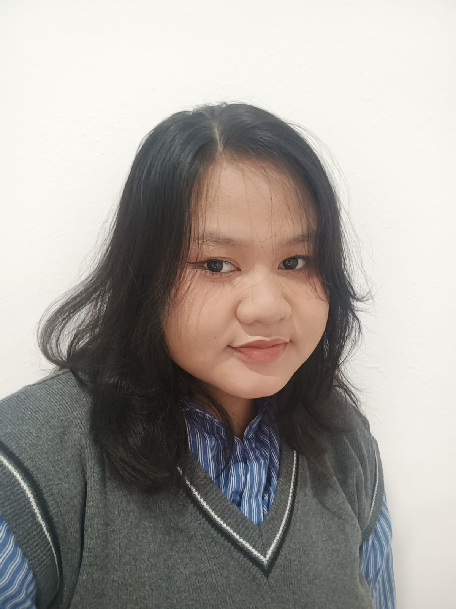

My name is Nadira Aliya Ramadhani. I am a student at Sultan Ageng Tirtayasa University, majoring in Informatics. with a big passion for UI/UX Design and web development. While I enjoy the world of web dev, my heart truly belongs to crafting user-friendly experiences. I love exploring what makes a design feel intuitive, comfortable, and just right for the people using it.
For me, the best part is taking the ideas floating around in my head and turning them into real, visual designs that actually come to life. There's nothing more satisfying than seeing a concept go from imagination to a fully realized interface.
I also thrive when collaborating, working with friends on new projects is where some of my best ideas are born. Whether it's brainstorming, designing, or building together, I believe great things happen when creative minds meet.
I design interfaces based on what clients need, always putting the user first. My goal is to create experiences that feel intuitive, visually pleasing, and genuinely easy to use for everyone.
I bring designs to life by building clean and responsive frontends. I enjoy turning a well-crafted design into a fully functional web experience.
I work well with others and believe good communication is the key to a great project. I enjoy being part of a team where ideas flow freely and everyone builds on each other's strengths.
I can create custom illustrations from icons for web design to standalone artwork. Whether it's something simple or more detailed, I love expressing ideas visually through drawing.
I enjoy tackling challenges head-on, whether it's finding a creative solution to a design problem or debugging code. I see obstacles as opportunities to learn and grow.
nadira.aliya.r.0910@gmail.com
(+62) 85210884078
@drirazzz